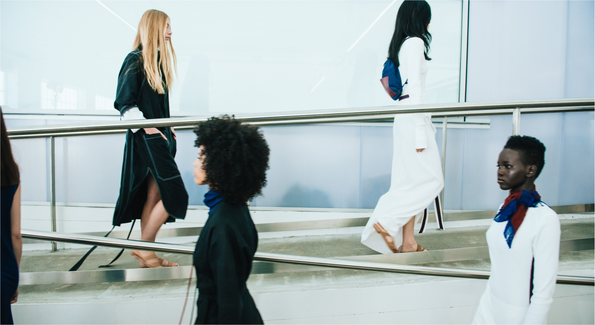
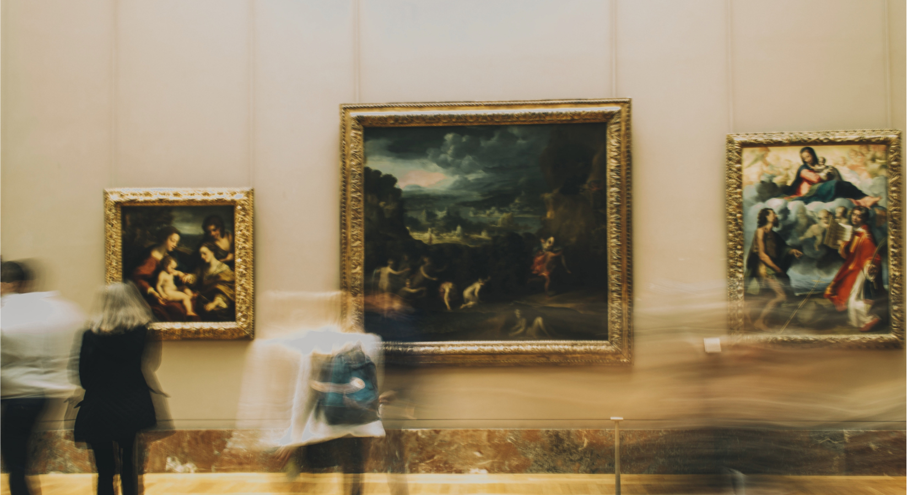
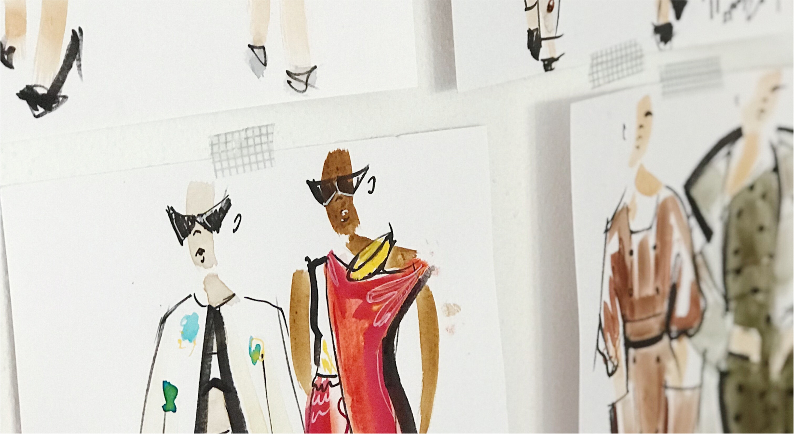
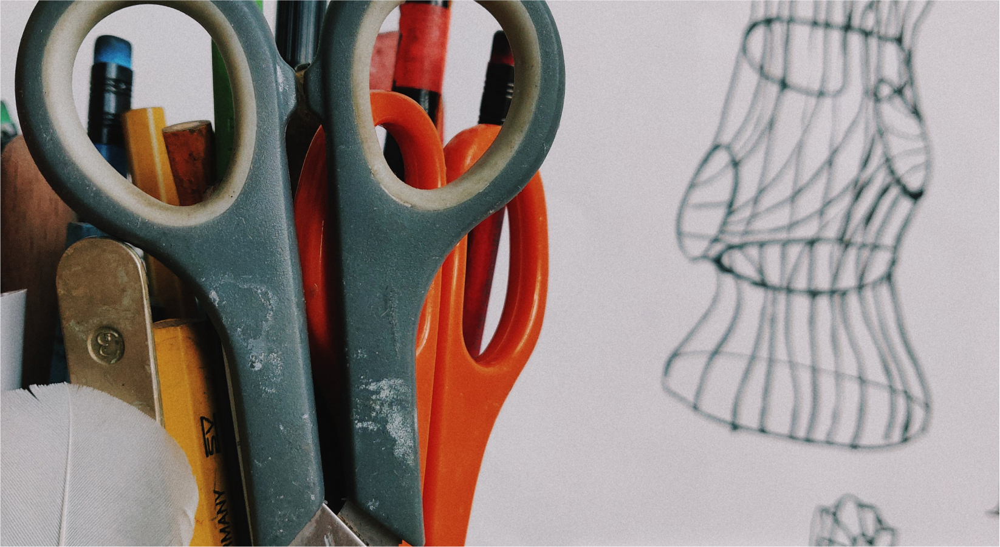
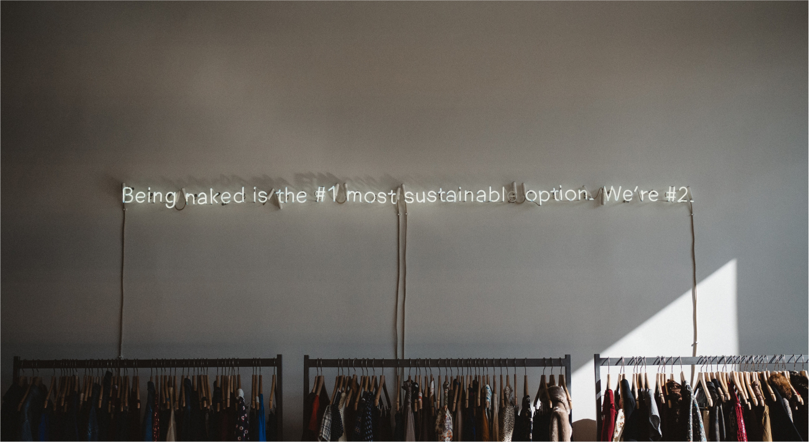
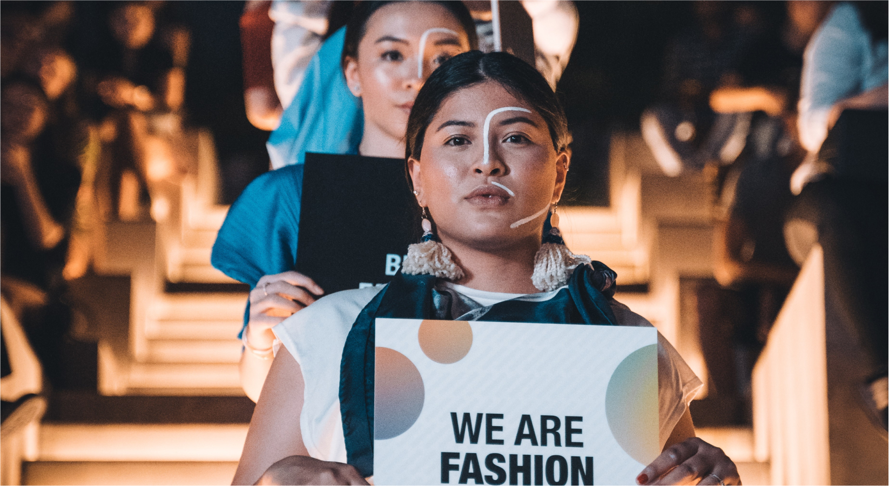

學習重點
- 各週工作坊主題 -
Week 1 - 時尚產業地圖
時尚，不只是關於聚光燈下瞬息萬變的亮點。從時尚產業發展的歷史、品牌DNA的延續與創新，以及到真正踏入時尚產業後會面對的各種行業類別，在第一週的工作坊中，您將深入了解支撐時尚產業運作的地圖全貌，透過個案研究品牌歷史的轉變，以及今日時尚世界的快速脈動。

Week 2 - 藝術品鑑與設計概論
時尚的靈感往往來自日常生活中的深刻觀察。在本週的工作坊中，學員將參訪巴黎各大美術館及博物館，從建築樣式、古典繪畫及現代藝術形式的豐富樣本中，培養藝術品鑑與識讀的能力，並透過走訪巴黎街道、觀察行人穿著及周邊店家的服飾陳設進行速寫，探究時尚的流行趨勢與發展潛能，學習設計概論和實務操作，並開始累積個人作品集的創作靈感。

Week 3 - 成為一位設計師：打造個人品牌
經過前二週的靈感收集和設計實作，本週的工作坊重點將著重於個人品牌的塑造、風格定位，以及作品集的創作。透過品牌參訪、品牌研究與市場調查，學員將更加了解一個品牌與設計師之間的密切關係，並學習如何打造個人品牌，逐步將腦海中的想法實作出來。

Week 4 - 時尚設計與創意方法
從天馬行空的創意靈感，到運用方法將想法收束為一件作品，本週的工作坊將深入介紹時尚設計與繪圖技巧，透過mood board 等創意發想工具，帶領學員從布料材質、色彩、剪裁、縫線等設計細節，全面組織個人作品的輪廓，為品牌注入獨特的小巧思。

Week 5 - 永續未來：21世紀的時尚設計素養
時尚，反映的是當今世界的價值所趨。近年來時尚界對於推陳出新的物質氾濫，提出永續性（sustainability）、工藝價值（craftsmanship）、多樣性（diversity）等價值主張，作為21世紀時尚設計的關注焦點。在本週的工作坊，學員將學習思考如何從布料的揀選、製作流程、跨文化合作等各個層面，透過設計實踐永續價值。

Week 6 - 成果展：機會、可能與想像
最後一週的工作坊，是學員們展現學習成果的時刻！成果展將在巴黎時尚學院 IFM Paris 舉行，由業界專業人士進行評點與指導。每位學員將從設計發想與作品展示，學習如何將自己的創作透過法語完整闡述，行銷自己的品牌。經過工作坊全程的培訓與練習，學員對於自己未來在時尚產業的前進方向，將展開更多的機會、可能與想像。
